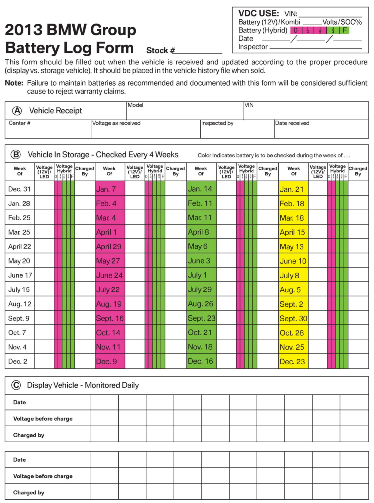
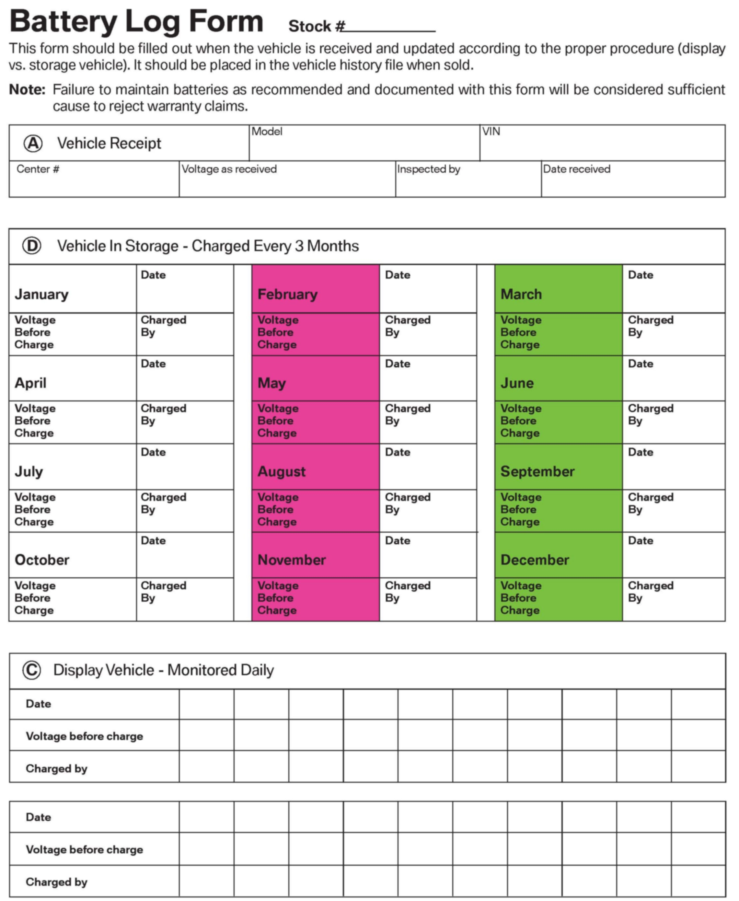
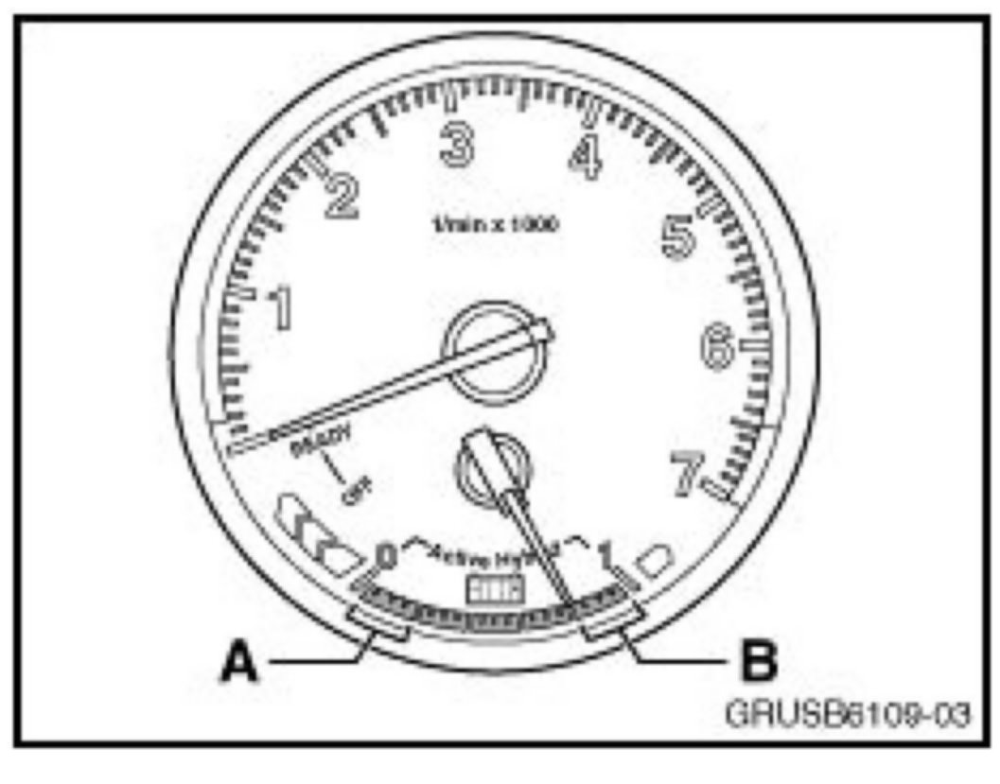
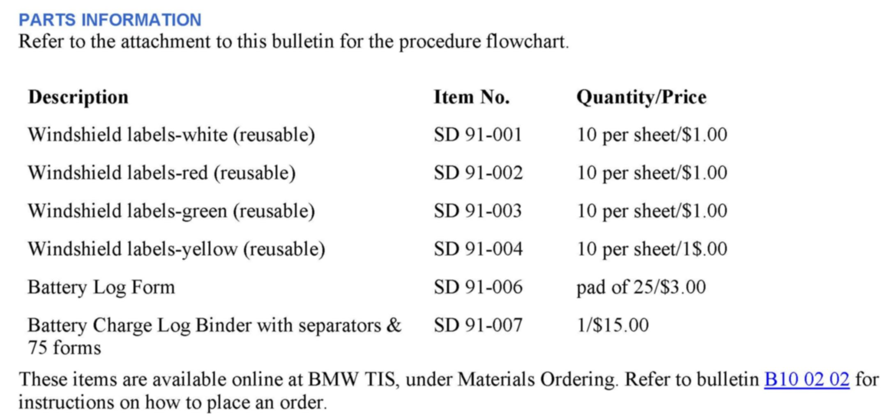
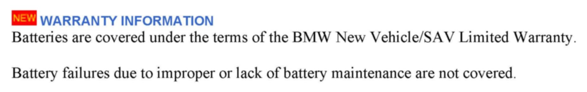
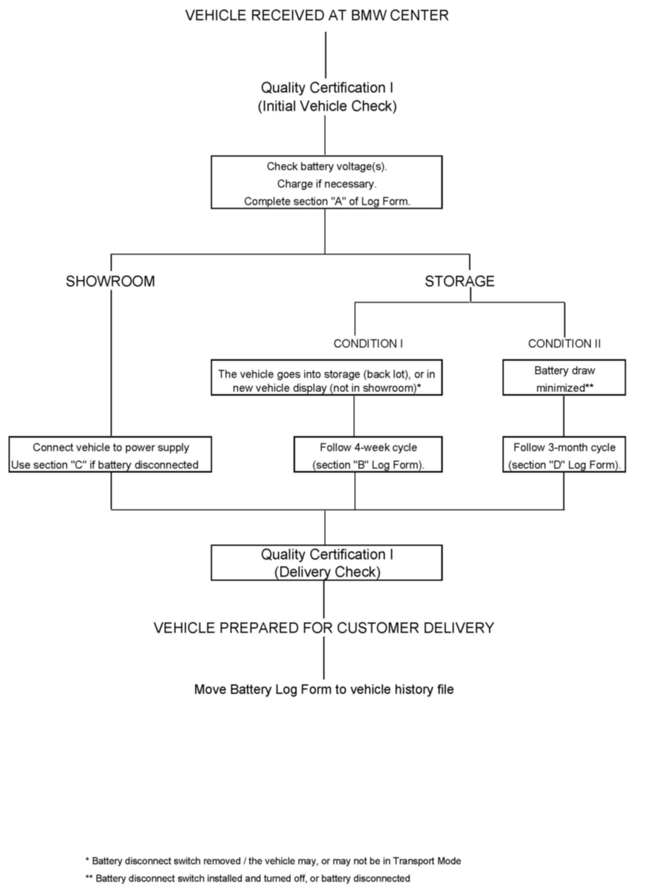

Electrical - Battery Maintenance Requirement Information
SI B61 18 08General Electrical Systems
December 2012
Technical Service
This Service Information bulletin supersedes SI B61 18 08 dated January 2012.
[NEW] designates changes to this revision
SUBJECT
Battery Maintenance Requirements
MODEL
All (new and used vehicles in BMW center inventory
[NEW] SITUATION
Proper battery maintenance is vital when BMW vehicles are in your centers inventory. Allowing a vehicles battery voltage to drop below 12.0 volts (12.0V) permanently reduces the battery life expectancy and can lead to premature failure of the battery.
We provide a flexible battery maintenance system every BMW center can use in accordance with their particular needs. This bulletin explains the 2013 Battery Charging calendar and charging systems.
PROCEDURE FOR 12V BATTERY SYSTEMS (INCL. 12 VOLT SYSTEMS IN HYBRID VEHICLES)


Upon receipt of a new vehicle, remove the battery log form (see above) from the glove compartment and complete section "A". Check the voltage of the 12V battery and recharge if less than 12.5V or 71% SoC (State of Charge).
The maintenance tracking system provides for 3 distinct options:
1. The vehicle goes into storage (back lot), or in a new vehicle display (not in the showroom)
^ The battery main disconnect switch has been removed; and
^ The vehicle may or may not be in Transport Mode.
A four-week charging cycle and calendar have been established for these cases.
The vehicle arrives, marked with a color-coded round sticker on the windshield. The respective color (one out of four possible colors) designates that the vehicles battery voltage must be checked in accordance with the new calendar on a four-week cycle.
Recharge any time the battery voltage is less than 12.5V or 71% SoC.
Each time a battery is checked, record the voltage in section "B" of the BATTERY LOG FORM.
2. The vehicle goes into the showroom, or a similar display area
^ The electrical system is "Customer ready"; and
^ The battery main disconnect switch has been removed; and
^ The vehicle has been taken out of Transport Mode using the BMW Diagnosis System.
When in the showroom display, energy consumption is frequent and unpredictable because of the showroom traffic. A four-week charging cycle will not suffice, due to the increased current draw imposed on the battery. This is because of frequent usage of the vehicles electrical components (demonstrations, product familiarization, etc.).
To ensure the battery charge is maintained, connect the battery via the underhood charging terminals to a suitable power supply (SI B04 23 10 and B04 21 09).
If the showroom vehicle battery needs to be disconnected due to state regulations, check the battery voltage on a regular basis to ensure the state of charge is maintained above 12.5V or 71% SoC. Record when the battery is recharged in section "C" of the BATTERY LOG FORM.
Note 1: For those BMW centers which have established their own working battery maintenance procedure which fulfills BMW guidelines, Section C can be used to track the charging of those vehicles.
[NEW] For BMW ActiveHybrid vehicles: Refer to SI B61 37 12 for special High-voltage Battery care instructions when using an external 12 volt battery charger.
3. The battery draw has been minimized for storage purposes
^ Either the battery main disconnect switch remains on the vehicle in the "OFF" position; or
^ The vehicle battery has been disconnected.
With the battery draw minimized, a 12-week charging cycle can be followed. Use section "D" of the BATTERY LOG FORM to document when the charging has been performed.
The columns on the form are identified by the colors white, red and green of the 12-week charging calendar, designating the months when the vehicles are to be charged. The windshield labels can also be used to track these vehicles, with the exception of the 4th color, yellow. Therefore, vehicles received with a yellow label will need to be reassigned another color.
The 12 week charging cycle requires the battery to be recharged at every check.
IMPORTANT:
Use a calibrated fluke 87 multimeter or similar device to measure battery voltage.
On vehicles equipped with maintenance-free batteries (with integrated hydrometer - "Magic Eye"), under certain circumstances (vehicle parked for an extensive period of time) due to electrolyte density stratification inside the battery, the internal hydrometer ("Magic Eye") may remain black after recharging, even though the battery tester shows it to be fully charged. Such batteries are fully serviceable.
Replace the battery if the battery acid level is too low (Magic Eye light yellow).
Since BMW uses only maintenance-free or AGM batteries, DO NOT ADD DISTILLED WATER!
If, at any time, the battery open circuit voltage should drop below 12.0V, or a battery replacement is indicated during the CBS handover inspection, perform Energy Diagnosis (refer to SI B61 13 05) to determine the cause. Any necessary repairs should be carried out and the battery MUST BE REPLACED. The replacement battery must be registered using the service function in the diagnosis equipment.
Dispose of all batteries properly, observing legal regulations.
Charging Procedure:
Battery charging must be performed using an approved battery charger (recommended charging voltage 14.8V). Refer to SI B04 21 09 and B04 23 10 for recommended chargers.
For an optimized charging procedure, the ambient temperature should be between 60°F and 75°F. Under these conditions, the battery can be considered fully charged when the charging current has fallen below 2.5 Amps.
Charging below 60°F should be avoided if possible, since the capacity of the battery to take up current is reduced and the charging time is extended considerably. However, if provisional charging below 60°F is performed, the charging voltage must be set to 14.8V. Charging shall be discontinued no earlier than when the charging current falls below 1.5 Amps.
Further Technical Notes
PROCEDURE FOR HIGH-VOLTAGE BATTERY PACKS INSTALLED IN HYBRIDS
High-voltage battery packs should be checked at the same maintenance intervals as for 12 volt batteries.

The charge status of the high-voltage battery pack is shown in the instrument cluster. If the charge indicator displays a state of charge in the lower quarter of the gauge (A), the high-voltage battery pack must be recharged until the charge indicator displays a value in the upper quarter (B).
On the battery log form, charge indicator positions A or B should be logged as follows:
A = 0 or 1/4 (depending on actual needle position)
B = 3/4 or F (depending on actual needle position)
^ Charge the high-voltage battery pack by starting the engine and letting it run until the required charge status is reached. If the vehicle is inside a building, exhaust extraction must be used. If the vehicle is outside, the vehicle must be in a secure area.
^ For vehicles where the state of charge of the high-voltage battery pack is insufficient to start the engine, connect a BMW recommended battery charger to the battery posts under the hood. Only use Deutronic DBL 1600 or Multi Charger 1500 battery chargers due to amperage requirements needed to bring the HV battery up to the necessary state of charge (refer to SI B04 23 10 for more information on currently approved battery chargers). The ignition must be switched on and all consumers that are not required switched off (e.g., lights, radio, A/C). When the CC message "Charging completed" is displayed, this means that the engine start capability has been restored. Start the engine and continue the charging process as described above.
Vehicles on the showroom floor should have the high-voltage system de-energized using the Service Disconnect on the top of the high-voltage battery unit.
USED VEHICLES
Used vehicles in BMW center inventory should be monitored and recharged according to the above principles. There is no reason why the battery maintenance should be neglected, since poor reliability of a pre-owned BMW may deter a customer from buying a new one at a later date.
VEHICLE DELIVERY
The CBS Handover Inspection must be performed as the last process step, immediately before delivery to the customer! Refer to the Service Information entitled "New Vehicle Preparation and Maintenance Requirements" for the vehicle model concerned.
Upon the sale of a vehicle, its BATTERY LOG FORM should be removed from the BATTERY CHARGE LOG (binder) and filed in the vehicle file, to be available for future reference.
To ensure that the battery remains fully charged, start the engine before demonstrating the operation of components to the customer at the time of delivery.
UNDER NO CIRCUMSTANCES should a vehicle equipped with a battery disconnect switch be sold or delivered to a customer.
GENERAL INFORMATION
If a vehicle is used as a demonstrator, the battery disconnect switch MUST BE REMOVED.
When reconnecting the battery, torque the battery nut by following the appropriate specification listed in Tightening Torque 61 21...
Under special circumstances where the battery disconnect switch is not removed, extreme caution must be taken not to turn off the battery disconnect switch while driving (for example, when moving the vehicle on the lot).
Note that the procedures outlined above are meant to be guidelines to assist BMW centers in assuring a sufficient state of charge of vehicle batteries at all times. Following these procedures, however, will not guarantee a sufficient state of charge on all batteries: there may be exceptional cases of excessive current draw through very frequent movement of back lot vehicles, for example, which may call for more frequent recharging than otherwise necessary.
The above guidelines for proper battery maintenance are meant to provide maximum flexibility for every BMW center. Regional BMW personnel will be happy to assist with setting up an effective charging and monitoring program.

PARTS INFORMATION

WARRANTY INFORMATION
Attachments

Flow Chart
Battery Log Form